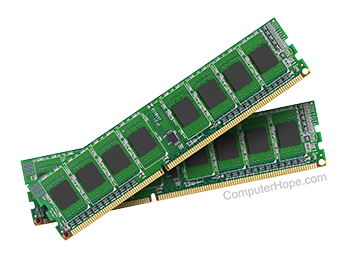

Datorns hårddisk är den komponent som primärt används för att spara och lagra data såsom program och filer av olika slag. Data som lagras på hårddisken skrivs också permanent till denna och stannar kvar även om datorn inte får någon ström. Datorns internminne lagrar, precis som en vanlig hårddisk, också data. Skillnaden är att den data som lagras i internminnet är sådan som används endast för tillfället, den lagras alltså inte permanent. Om du till exempel startar ett program laddas delar av programmets filer in till internminnet. Varför görs då detta? Jo, för att internminnet arbetar ofantligt mycket snabbare än en vanlig hårddisk. Det går alltså mycket snabbare för datorns processor att fråga internminnet om en fil och få filen än vad det tar om frågan ställs till datorns hårddisk. Som användare har du inte speciellt mycket att säga till om när det gäller vilka filer som lagras i internminnet för tillfället, utan datorns bestämmer själv vilka filer den anser används mest. Beroende på vad en dator används till behöver den en större eller mindre mängd internminne. Minnesmängden skrivs antingen i GB (gigabyte) eller MB (megabyte). 1GB förklarar för oss att minnet har möjlighet att lagra just en gigabyte data. Jämför detta med en vanlig bildfil som är cirka 5MB (megabyte). En sådan bildfil tar alltså upp 0.005GB av internminnes storlek. En minimigräns för minnesmängd idag är 2GB. Även om minst 4GB oftast är att föredra klarar sig en del enklare datorer okej med bara 2GB mängd internminne, speciellt om datorn endast används till att till exempel ordbehandling och internetanvändning. Används däremot datorn till film- eller bildredigering eller om många program används samtidigt kommer man dessvärre inte särskilt långt på varken 2GB eller 4GB då minnesmängden snabbt fylls upp av program och filer.
